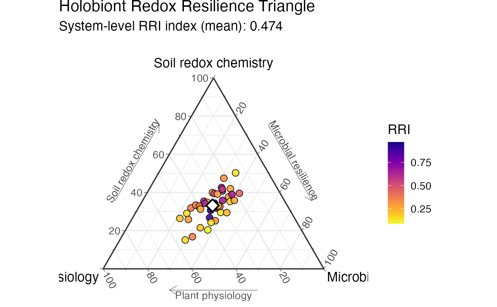

Demonstrates a complete RedoxRRI workflow using a synthetic
plant-soil-microbiome time-series dataset generated by
simulate_redox_holobiont().
This example shows how to:
Simulate a spatio-temporal holobiont redox dataset.
Compute sample-level Redox Resilience Index scores.
Inspect compositional Physio-Soil-Micro RRI allocation.
Quantify perturbation-recovery metrics.
Generate ternary and recovery-metric visualizations.
Inspect the formal recovery-metric dictionary.
The simulated dataset contains plant physiological variables, rhizosphere oxygen-flux proxies, soil redox chemistry, hydrological variables, dissolved organic carbon, microbial abundance features, microbial redox trait proxies, and optional functional gene abundance or MetaT-style expression features.
The generated data are fully synthetic and are provided for examples,
testing, benchmarking, teaching, and method development. They are not
calibrated to any specific ecosystem. Users may replace these simulated
inputs with their own external datasets, provided that rows are aligned
across id, ROS_flux, Eh_stability, and micro_data.
# Simulate a compact synthetic holobiont redox time series
sim <- simulate_redox_holobiont(
n_plot = 2,
n_depth = 1,
n_plant = 2,
n_time = 12,
p_micro = 20,
p_gene = 36,
gene_mode = "both",
seed = 1
)
# Inspect the returned data layers
names(sim)
#> [1] "id" "ROS_flux" "Eh_stability" "micro_data"
#> [5] "micro_traits" "gene_abundance" "gene_expression" "gene_log2fc"
#> [9] "latent_truth" "graph"
head(sim$id)
#> plot depth plant_id time
#> 1 P1 D1 Plant1 1
#> 2 P2 D1 Plant1 1
#> 3 P1 D1 Plant2 1
#> 4 P2 D1 Plant2 1
#> 5 P1 D1 Plant1 2
#> 6 P2 D1 Plant1 2
head(sim$ROS_flux)
#> SPAD FvFm PhiPSII NPQ ROL root_exudates organic_acids
#> 1 38.77632 0.7742972 0.4130105 0.773060 0.5615894 0.3830363 0.3989324
#> 2 38.95021 0.8179490 0.3524158 1.058629 0.3252086 0.3523482 0.4017655
#> 3 38.15909 0.7504269 0.3923214 1.232825 0.3521709 0.6165144 0.7689973
#> 4 40.08601 0.7121405 0.3187551 1.211874 0.3614843 0.4446391 0.4705153
#> 5 38.43003 0.8151769 0.3977979 1.005265 0.4385286 0.4018359 0.4220736
#> 6 42.95317 0.8056588 0.4516764 1.040503 0.4718364 0.3426246 0.4626861
#> phenolics exudate_redox_activity aerenchyma ROL_barrier root_oxidative_stress
#> 1 0.5268247 0.6184170 0.5093625 0.3727283 0.3594038
#> 2 0.4301143 0.4827934 0.3598374 0.2690919 0.2681625
#> 3 0.4845959 0.7487404 0.3824387 0.3137508 0.4076222
#> 4 0.4556769 0.5763653 0.4690643 0.2591245 0.4353275
#> 5 0.3770405 0.6307966 0.5147528 0.3995901 0.4240292
#> 6 0.3249351 0.5004739 0.3447519 0.2383290 0.3254950
#> root_redox_buffering Fe_plaque_proxy
#> 1 0.6422268 0.4361161
#> 2 0.6602532 0.4391303
#> 3 0.5826792 0.3727515
#> 4 0.5442304 0.3288980
#> 5 0.6491779 0.3050139
#> 6 0.6778140 0.3488859
head(sim$Eh_stability)
#> Eh pH water_content air_filled_porosity pore_connectivity
#> 1 400.7070 6.006158 0.3159095 0.6473522 0.8431993
#> 2 598.2654 6.293851 0.2654029 0.7203951 0.8042038
#> 3 476.7044 6.177994 0.3130602 0.6683288 0.6939864
#> 4 463.0574 6.431024 0.2395360 0.7617275 0.7360910
#> 5 551.4336 6.839052 0.3648573 0.6078150 0.7451604
#> 6 502.8485 6.865662 0.3922261 0.6125147 0.7308929
#> aqueous_connectivity oxygen_availability DOC
#> 1 0.1607325 0.6029673 21.53122
#> 2 0.1333828 0.6792082 21.63300
#> 3 0.2912000 0.6918896 23.41456
#> 4 0.1168828 0.5997802 14.98369
#> 5 0.2759989 0.5776925 30.48333
#> 6 0.2555045 0.6231910 23.98011
#> dissolved_organic_matter_redox EAC EDC redox_buffer_capacity
#> 1 0.4160977 57.62910 43.15440 98.71382
#> 2 0.3315019 77.07201 32.78021 108.40372
#> 3 0.4714293 59.13449 43.31394 111.85065
#> 4 0.3299475 64.83480 35.13202 109.75295
#> 5 0.4369496 77.70450 37.51194 114.54963
#> 6 0.3848894 76.70043 38.62593 111.15169
#> Fe2.Fe3 Mn2.Mn4 NH4.NO3 sulfide_risk methane_potential
#> 1 0.12404746 0.14360524 0.30780705 0.5069985 0.3136759
#> 2 0.03326275 0.02594712 0.08973340 0.2186956 0.4910774
#> 3 0.05487079 0.04885857 0.08518885 0.6345906 0.4751911
#> 4 0.13275098 0.05715241 0.13948010 0.7142311 0.6080501
#> 5 0.02920813 0.09140790 0.05872917 0.5136102 0.6207476
#> 6 0.03472832 0.03862023 0.14220052 0.3399114 0.4787399
#> nitrate_reduction_potential
#> 1 0.6143978
#> 2 0.3364403
#> 3 0.6274187
#> 4 0.5143607
#> 5 0.8364437
#> 6 0.6397890
head(sim$micro_data)
#> ASV1 ASV2 ASV3 ASV4 ASV5 ASV6 ASV7 ASV8 ASV9 ASV10 ASV11 ASV12 ASV13 ASV14
#> 1 18 19 15 13 17 22 0 13 0 20 17 12 19 15
#> 2 11 16 6 13 5 14 16 5 0 10 10 0 0 8
#> 3 24 20 19 15 14 25 15 0 0 0 16 16 0 18
#> 4 0 0 0 11 0 18 25 0 18 14 20 0 0 18
#> 5 16 0 24 0 20 22 15 12 15 22 13 21 21 0
#> 6 0 9 10 11 16 9 15 11 0 8 9 0 9 14
#> ASV15 ASV16 ASV17 ASV18 ASV19 ASV20
#> 1 19 15 0 25 18 13
#> 2 7 16 8 7 0 18
#> 3 17 0 14 14 0 18
#> 4 14 16 0 18 9 17
#> 5 0 0 0 20 17 14
#> 6 0 12 13 12 15 0
head(sim$micro_traits)
#> aerobic_respiration denitrification Fe_Mn_reduction EET_potential
#> 1 0.5701393 0.4633672 0.4753906 0.4235275
#> 2 0.7691574 0.2157783 0.3486865 0.4393392
#> 3 0.6257097 0.5019082 0.3963245 0.3743794
#> 4 0.6288336 0.3586689 0.3194167 0.5222844
#> 5 0.6292187 0.7453846 0.4272009 0.4177134
#> 6 0.6350436 0.4613126 0.2200395 0.3168998
#> sulfate_reduction methanogenesis flavin_mediator phenazine_mediator
#> 1 0.1789820 0.1232189 0.5214618 0.4977250
#> 2 0.1557754 0.2057682 0.4231013 0.5859390
#> 3 0.2406402 0.2153071 0.4553031 0.5476914
#> 4 0.3560927 0.3845150 0.3651001 0.4321565
#> 5 0.3208071 0.4145090 0.3727359 0.3587360
#> 6 0.2017710 0.4027926 0.5209941 0.3947485
#> quinone_humic_shuttle microbial_ROS_detox AMF_connectivity protist_grazing
#> 1 0.4062850 0.5054355 0.5961136 0.19604078
#> 2 0.4442154 0.6299376 0.4097536 0.25955062
#> 3 0.3013716 0.5645437 0.7317431 0.21075482
#> 4 0.2954549 0.5059285 0.4047942 0.08690883
#> 5 0.3851232 0.5385070 0.5092985 0.26692145
#> 6 0.3944653 0.4765173 0.4088594 0.23020754
#> viral_lysis microbial_memory microbial_redox_flexibility
#> 1 0.3026409 0.4969501 0.5412199
#> 2 0.2337987 0.3526094 0.5094246
#> 3 0.3990378 0.3795379 0.5366270
#> 4 0.3786773 0.4914769 0.5725594
#> 5 0.2798941 0.4183282 0.6918952
#> 6 0.3356196 0.4179912 0.4565901
# Combine microbial abundance, trait, and gene-level features
micro_features <- cbind(
sim$micro_data,
sim$micro_traits,
sim$gene_abundance,
sim$gene_log2fc
)
# Compute RedoxRRI scores
res <- rri_pipeline_st(
ROS_flux = sim$ROS_flux,
Eh_stability = sim$Eh_stability,
micro_data = micro_features,
id = sim$id,
reducer = "per_domain",
scaling = "pnorm"
)
# Sample-level RRI scores
head(res$row_scores)
#> Physio Soil Micro RRI Micro_abundance Micro_network
#> 1 0.25761182 0.33712179 0.2491319 0.25205055 0.2491319 NA
#> 2 0.11816017 0.05674736 0.1037598 0.08817887 0.1037598 NA
#> 3 0.47910288 0.34493260 0.2578586 0.36999867 0.2578586 NA
#> 4 0.32947294 0.15691448 0.2422727 0.21254190 0.2422727 NA
#> 5 0.21722506 0.33706406 0.3399794 0.25960966 0.3399794 NA
#> 6 0.07007747 0.23731822 0.1647191 0.12731081 0.1647191 NA
#> Micro_mfa
#> 1 NA
#> 2 NA
#> 3 NA
#> 4 NA
#> 5 NA
#> 6 NA
# Compositional Physio-Soil-Micro allocation used for ternary plots
head(res$row_scores_comp)
#> Physio Soil Micro RRI
#> 1 0.3052759 0.3994970 0.2952271 0.25205055
#> 2 0.4240187 0.2036384 0.3723429 0.08817887
#> 3 0.4428371 0.3188229 0.2383400 0.36999867
#> 4 0.4521627 0.2153466 0.3324907 0.21254190
#> 5 0.2429081 0.3769160 0.3801759 0.25960966
#> 6 0.1484331 0.5026705 0.3488964 0.12731081
# Ternary visualization requires res$row_scores_comp, not recovery metrics
if (requireNamespace("ggtern", quietly = TRUE) &&
requireNamespace("ggplot2", quietly = TRUE) &&
requireNamespace("viridis", quietly = TRUE)) {
plot_RRI_ternary(
res$row_scores_comp,
point_size = 3,
show_centroid = TRUE
)
}
#> Warning: Ignoring unknown aesthetics: z

# Quantify perturbation-recovery metrics from the RRI trajectory
rec <- rri_recovery_metrics(
res = res,
id = sim$id,
time_col = "time",
group_cols = c("plot", "depth", "plant_id"),
perturb_start = 5,
perturb_end = 7
)
head(rec)
#> plot depth plant_id x0 xmin_perturb xmax_perturb x_extreme
#> 1 P1 D1 Plant1 0.2288552 0.4332420 0.9640956 0.9640956
#> 2 P2 D1 Plant1 0.1279521 0.6360108 0.9686484 0.9686484
#> 3 P1 D1 Plant2 0.2856231 0.6282205 0.9678083 0.9678083
#> 4 P2 D1 Plant2 0.1938707 0.6038622 0.9657391 0.9657391
#> perturb_direction xmin_recovery xmax_recovery xeq A A_norm
#> 1 increase 0.2817995 0.8279689 0.3261878 0.7352404 3.212688
#> 2 increase 0.2059337 0.8203956 0.2276397 0.8406962 6.570397
#> 3 increase 0.2363630 0.8777452 0.3994274 0.6821852 2.388410
#> 4 increase 0.1275603 0.8454085 0.3436001 0.7718684 3.981357
#> tau_lag O O_norm I I_norm k k_r2 k_n
#> 1 0 0.00000000 0.0000000 0.09733261 0.4253021 0.8637864 0.95607575 5
#> 2 0 0.00000000 0.0000000 0.09968762 0.7791009 0.8021020 0.77812924 5
#> 3 0 0.04926016 0.1724656 0.11380424 0.3984420 0.2493486 0.09292149 5
#> 4 0 0.06631043 0.3420343 0.14972943 0.7723160 0.1283054 0.08177943 5
#> k_flag tau_r t_half H trajectory_class
#> 1 ok 1.157694 0.8024521 NA fast_recovery
#> 2 ok 1.246724 0.8641634 NA fast_recovery
#> 3 low_fit_quality 4.010450 2.7798321 NA slow_recovery
#> 4 low_fit_quality 7.793903 5.4023222 NA slow_recovery
# Recovery metric dictionary
rri_metric_table()
#> symbol metric
#> 1 x(t) System state
#> 2 x0 Pre-perturbation baseline
#> 3 xmin_perturb Minimum perturbation state
#> 4 xmax_perturb Maximum perturbation state
#> 5 x_extreme Perturbation extremum
#> 6 perturb_direction Perturbation direction
#> 7 xmin_recovery Minimum recovery state
#> 8 xmax_recovery Maximum recovery state
#> 9 xeq Post-recovery equilibrium
#> 10 A Amplitude of change
#> 11 A_norm Normalized amplitude
#> 12 tau_lag Lag time
#> 13 O Direction-aware overshoot
#> 14 O_norm Normalized overshoot
#> 15 I Incomplete recovery
#> 16 I_norm Normalized incomplete recovery
#> 17 k Recovery rate constant
#> 18 k_r2 Recovery fit R-squared
#> 19 k_n Recovery fit sample size
#> 20 k_flag Recovery fit diagnostic flag
#> 21 tau_r Characteristic recovery time
#> 22 t_half Half-recovery time
#> 23 H Hysteresis
#> equation
#> 1 x(t)
#> 2 mean{x(t): t < t0}
#> 3 min{x(t): t0 <= t <= t1}
#> 4 max{x(t): t0 <= t <= t1}
#> 5 x(t*) where t* = arg max |x(t) - x0| during perturbation
#> 6 sign(x_extreme - x0)
#> 7 min{x(t): t > t1}
#> 8 max{x(t): t > t1}
#> 9 mean{x(t): final recovery window}
#> 10 max |x(t) - x0| during perturbation
#> 11 A / |x0|
#> 12 tdetect - t0
#> 13 Directional exceedance beyond baseline
#> 14 O / |x0|
#> 15 |xeq - x0|
#> 16 I / |x0|
#> 17 log|x(t)-xeq| = a - k(t-t1)
#> 18 1 - SSres / SStot
#> 19 Number of recovery observations used in k fit
#> 20 Diagnostic classification of k estimation
#> 21 1 / k
#> 22 log(2) / k
#> 23 H ≈ mean(|xrec(Fi) - xpert(Fi)|)
#> interpretation
#> 1 Observed RRI or resilience-associated system state.
#> 2 Estimated steady-state baseline before perturbation.
#> 3 Lowest observed state during perturbation.
#> 4 Highest observed state during perturbation.
#> 5 State farthest from baseline during perturbation.
#> 6 Direction of perturbation relative to baseline.
#> 7 Lowest observed state during recovery.
#> 8 Highest observed state during recovery.
#> 9 Estimated equilibrium after recovery.
#> 10 Magnitude of perturbation displacement from baseline.
#> 11 Dimensionless perturbation amplitude.
#> 12 Delay between perturbation onset and detectable response.
#> 13 Transient exceedance beyond baseline opposite the perturbation direction.
#> 14 Dimensionless overshoot metric.
#> 15 Persistent displacement from baseline after recovery.
#> 16 Dimensionless incomplete-recovery metric.
#> 17 Estimated first-order exponential recovery rate.
#> 18 Goodness-of-fit for exponential recovery approximation.
#> 19 Effective sample size used to estimate recovery kinetics.
#> 20 Diagnostic information describing recovery-rate estimation quality.
#> 21 Characteristic recovery timescale.
#> 22 Time required to recover half the remaining deviation.
#> 23 Path dependence between perturbation and recovery trajectories.
# Recovery visualizations
if (requireNamespace("ggplot2", quietly = TRUE) &&
requireNamespace("tidyr", quietly = TRUE) &&
requireNamespace("tidyselect", quietly = TRUE)) {
plot_rri_recovery_map(rec)
plot_rri_recovery_landscape(rec)
}
#> Error in plot_rri_recovery_map(rec): could not find function "plot_rri_recovery_map"